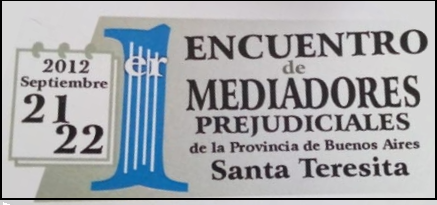

Primer Encuentro
{kind=link}
{kind=link}
{kind=link}
{kind=link}
{kind=link}
{kind=link}
-
Conclusiones del Primer Encuentro de Mediadores
- COMISION DE EVALUACION DE LA PRACTICA EN LA AUDIENCIA
- COMISION DE ANÁLISIS DE LA LEY 13951, DECRETO REGLAMENTARIO Y RESOLUCIONES MINISTERIALES:
- COMISION DE EVALUACION DEL SISTEMA DE HONORARIOS Y SU REGULACION LEGAL Y JURISPRUDENCIA INCIPIENTE:
- 4. COMISION DE MEDIACIONES VOLUNTARIAS:
Conclusiones del Primer Encuentro de Mediadores

VIERNES, 23 DE DICIEMBRE DE 2016
Declarado DE INTERES GENERAL por la LEGISLATURA DE LA PROVINCIA DE BUENOS AIRES.-
“Los participantes del Primer Encuentro de Mediadores Prejudiciales de la Provincia de Buenos Aires, reunidos en Santa Teresita, los días 21 y 22 del mes de septiembre de 2012, con el objeto de realizar un diagnóstico de la práctica de la incumbencia desde su implementación obligatoria en la Provincia y formular propuestas que tiendan a la optimización del sistema, luego de trabajar durante una jornada completa en cuatro comisiones, a saber:
- EVALUACION DE LA PRACTICA EN LA AUDIENCIA (partes, abogados, acuerdos),
- ANALISIS DE LA LEY 13951, SU DECRETO REGLAMENTARIO Y RESOLUCIONES MINISTERIALES,
- EVALUACION DEL SISTEMA DE HONORARIOS Y SU REGULACION LEGAL Y JURISPRUDENCIA INCIPIENTE,
- MEDIACIONES VOLUNTARIAS.
Y reunidos en Plenario durante otra media jornada, hemos arribado a algunas conclusiones, cuya lectura y consenso se dieron lugar el día 22 de septiembre.-
Antes de adentrarnos en explicación de las propuestas, debemos advertir -que lo primero que podemos destacar, sin temor a equivocarnos- es el hecho de que en el vasto territorio de la Provincia de Buenos Aires, se viven realidades muy diferentes.
En nada se parecen las necesidades del Mediador del Conurbano (con la posibilidad del justiciable de elegir la Jurisdicción de la Capital Federal) a las del Mediador del interior de la Provincia de Buenos Aires -que no tiene Juzgados Descentralizados y tiene que viajar cientos de kilómetros para poder mediar en las cabeceras de Departamento Judicial- o a las necesidades de los Mediadores de las ciudades o partidos de amplísimos territorios, donde muchos de ellos tienen sus oficinas a mas distancia de la prevista para instalarlas conforme la normativa vigente.
Somos concientes de que resulta imposible, en un primer encuentro, preveer y analizar TODAS las cuestiones que aquejan a TODOS los mediadores de la Provincia. También consideramos que, aun analizados muchos temas, es difícil en una primera aproximación, consensuar una solución o propuesta posible. Por esta razón no hemos tenido inconveniente en proponer un mayor debate en los temas en los que no logramos acuerdo por una mayoría significativa.
Sin embargo, durante las jornadas de trabajo hemos analizado, debatido y consensuado recomendaciones y propuestas sobre temas que, no dudamos, optimizaran sensiblemente el funcionamiento del Sistema.
-
COMISION DE EVALUACION DE LA PRACTICA EN LA AUDIENCIA
Esta comisión contó con la coordinación de las Mediadoras Laura Orfila de Necochea y Graciela Testa de Mar del Plata.
En la misma se trató una compleja agenda, a saber:
- RECEPTORIA GENERAL DE EXPEDIENTES (SORTEOS Y FICHAS);
- COMEDIADOR;
- SUBROGACION EN LA MEDIACION;
- MEDIACION PRE JUDICIAL EN LA QUE INTERVIENE UN MENOR;
- INVOCACIÓN DEL ART. 48 DEL C.P.C.C.-
Adelantamos que hemos considerado que son merecedores de un mayor debate los temas referentes a la Comediación y a la Mediación Prejudicial en la que interviene un menor. Es por eso que su tratamiento se difirió para el próximo encuentro, instando desde este Primer Encuentro a los colegas a trabajar con cuidado en estos temas, y en todo caso, elaborar ponencias que puedan ser previamente analizadas.-
Respecto de la Receptoría General de Expedientes, dado el legitimo derecho que tenemos a trabajar, y las características particulares de la asignación de las causas por sorteo, a lo que se suma la actual impuntualidad con lo que los abogados patrocinantes entregan la planilla al mediador sorteado (fuera del termino establecido por el art. 8 de la Ley 13.951), vemos adecuado que el sistema nos de un ALERTA TEMPRANA DE FORMA AUTOMATICA y a la casilla de correo que hemos informado oportunamente. Esta recomendación se articula con el Análisis de la Ley realizado por la Comisión 3.-
Creemos importante, asimismo, que se vigile el cumplimiento de la acordada 3585, en tanto se han detectado casos de doble sorteo.-
Respecto de la subrogación, se propone que cada Mediador denuncie un reemplazante para el caso de que, por caso de fuerza mayor, no pueda asistir a la audiencia designada ni suspenderla.-
El último tema analizado fué la posibilidad de incorporar al procedimiento de la Mediación la figura del Gestor prevista en el art. 48 del Código de Procedimiento en lo Civil y Comercial de la Provincia de Buenos Aires. Consideramos que la invocación de tal norma NO ES ADMISIBLE en el procedimiento de mediación en tanto su admisión, contariaria el espíritu mismo del Instituto.-
-
COMISION DE ANÁLISIS DE LA LEY 13951, DECRETO REGLAMENTARIO Y RESOLUCIONES MINISTERIALES:
Esta comisión trabajó con la coordinación de las Mediadoras Adriana Leon de Mar del Plata, y Alejandra Huebra de Tres Arroyos.-
La agenda contó con los siguientes temas:
- FORMACIÓN Y CAPACITACIÓN;
- MATERIAS MEDIABLES;
- JUZGADOS DE PAZ;
- BENEFICIO DE LITIGAR SIN GASTOS;
- ALCANCE DEL PRINCIPIO DE CONFIDENCIALIDAD;
- HOMOLOGACION.
Respecto de la Formación y Capacitación, conforme la obligatoriedad de la capacitación continua y de la manda legal de que el Ministerio de Justicia promueva la misma, solicitamos se provea una opción gratuita y con un Régimen descentralizado -cuanto menos- por Departamento Judicial; sin perjuicio de que el mediador pueda elegir otras opciones que le reconozcan la capacitación exigida.-
Dos consideraciones fundamentan este pedido: la primera de ellas es que hay Formadores capacitados por el Cijuso y por las Universidades en toda la Provincia de Buenos Aires que podrían asumir el rol docente para la capacitación exigida; la segunda, que hay Entidades reconocidas a Nivel Nacional, y actividades concretas dentro de la incumbencia, que también ofrecen o implican opciones de capacitación que podrían ser elegidas por cada Mediador, solicitando el reconocimiento en cada caso especial en principio, y en general a futuro.-
Por otra parte, interpretamos que cuando los arts. 21 inc. 9 y 22 inc. 3 del decreto reglamentario 2530/10 hablan de evaluación se refieren a la que es necesaria para obtener la matricula de Mediador Prejudicial únicamente.-
Respecto de las Materias Mediables, realizamos una comparación exhaustiva entre el listado de materias judiciables y las mediables y llegamos a las siguientes conclusiones:
- Por no estar exceptuadas en la Ley 13.951 las materias Régimen de Visitas, Tenencia de hijos y Liquidación de Sociedad Conyugal, consideramos que las mismas deben ser sometidas a mediación prejudicial, solicitando se incorporen sin mas tramite al Anexo dictado por la Suprema Corte de Justicia de la Provincia de Buenos Aires (acuerdo 3585).-
- Tambien deberían incluirse sin mas trámite en el Anexo para sorteo las siguientes materias NO EXCLUIDAS por la ley y que se designan por fuero y con su respectivo código: 2.1. Fuero Contencioso Administrativo: 395 IMPUGNAClON CONTRA RESOLS. DE COL. O CONS. PROFES.; 412 RECURSO DE REVISION COLEGIOS O CONSEJOS PROFESIONALES (No son Entes que ampare la excepción del art. 4 de la ley); 2.2. Fuero Civil y Comercial: 11 RECLAMO CONTRA ACTOS DE PARTICULARES (En este caso entraría cuestiones de vecindad como “Cese Ruidos Molestos”, etc.); 66 DISOLUCION Y LlQ. DE SOCIEDAD (INC.SOC. DE HECHO); 76 USO-ACCIONES DERIVADAS; 77 USUFRUCTO-ACCIONES DERIVADAS; 78 ACCION DE REDUCCION; 93 VICIOS REDHIBITORIOS; 111 CONSIGNACION MUEBLES Y LLAVES; 112 CONSIGNACION DE SUMAS DINERO, ALQ.,ARRENDAM.; 164 VENTA MERCADERIAS POR CUENTA DE TERCEROS; 281 HABEAS DATA (En este caso cuando se trate de bancos o Servicios de Informes Crediticios porqué no mediar con Bancos, Fideicomisos y Veraz).; 178 HOMOLOGACION DE CONVENIO.-
- Por otra parte, se propone al Legislador incorporar como materias de mediación prejudicial obligatoria a las incluidas en el art. 835 del C.P.C.C, con excepción de las que determinan estado, teniendo en cuenta la experiencia a nivel de otras provincias y a nivel nacional, a la propia formación que hemos recibido en tal sentido los mediadores de la Provincia de Buenos Aires, a los acuerdos a los que se arriba en la etapa previa en Instancia Judicial y al hecho, de público y notorio, de que es en estas materias donde la Mediación ha obtenido, en todo su desarrollo, mejores resultados. Ello sin perjuicio de la intervención del Ministerio Público, si correspondiere.-
Instamos también a los Sres. Jueces a que -cuando así lo consideren oportuno,
y encuentren que la mediación podría ser útil como herramienta para resolver conflictos sobrevinientes en un proceso judicial- deriven los mismos a los mediadores prejudiciales que hayan intervenido, o -en su caso- soliciten a la receptoria general de expedientes el sorteo correspondiente, como en el caso de divisiones de condominio, concursos, sucesiones, etc..-
Con referencia al tema de los Juzgados de Paz, estamos persuadidos de que sería de suma utilidad que se incluya el sistema de mediación prejudicial obligatoria en las materias de competencia compartida con los Juzgados Civiles y Comerciales de Primera Instancia. Sería sumamente útil para descomprimir la tarea de tales Juzgados que se encuentran actualmente sobrecargados con la inclusión en su competencia de los temas relacionados con la Violencia Familiar.-
En cuanto a los Juzgados de Familia, y en virtud de la solicitud referida en el punto anterior, también consideramos que sería sumamente útil la imposición del procedimiento de mediación previa obligatoria.-
En virtud de ello, instamos al Legislador y a la Suprema Corte de Justicia de la Provincia de Buenos Aires, a realizar las gestiones necesarias para su implementación.-
Es de suma importancia definir un criterio en referencia a los Beneficios de Litigar sin Gastos, en este sentido consideramos que la falta de acreditación de la iniciación del Beneficio de Litigar sin Gastos y la falta del tilde correspondiente en el formulario de inicio por receptoría, implicará que el mediador tenga por no iniciado el beneficio. Por otra parte, solicitamos a la
Suprema Corte de Justicia de la Provincia de Buenos Aires, que incorpore en el
formulario correspondiente al sorteo de mediador -además del casillero para tildar si tiene o no beneficio de litigar sin gastos- un casillero para incorporar el número de causa del beneficio iniciado.-
Se debatió extensamente el tema de la Confidencialidad. Sabemos que es uno de los principios fundamentales de la Mediación, previsto expresamente en el art. 1 de la Ley 13951. El art. 16 determina el alcance de ese principio y, por otra parte, se advierte que la reglamentación de la ley, en el decreto 2530/2010 sostiene el mismo criterio de confidencialidad.-
Por ello, instamos a la Autoridad de Aplicación a que ajuste sus encuestas al cumplimiento de estas disposiciones. Los mediadores nos amparamos en nuestra obligación legal, para advertir a la Autoridad de aplicación que no podemos contestar ningún cuestionario que viole el principio mencionado.-
Entendemos que la homologación del convenio obtenido en una mediación, prevista en el art. 19 de la ley 13951, entendida a la luz del principio básico de autocomposición del Instituto, y teniendo en cuenta el modo en que ha sido reglamentada en el art. 18 2530/2010) es facultativa para las partes y/o el mediador y no obligatoria. Dejamos a salvo los casos en que se requiera la intervención promiscua de la Asesoría de Menores e Incapaces.-
-
COMISION DE EVALUACION DEL SISTEMA DE HONORARIOS Y SU REGULACION LEGAL Y JURISPRUDENCIA INCIPIENTE:
Este grupo de trabajo fué coordinado por las Mediadoras Alejandra Potente de La Plata y Sandra Conti de Quilmes.-
La comisión trabajo en la siguiente agenda:
- COBRO DE GASTOS ADMINISTRATIVOS;
- ANALISIS DE LA LEY;
- HONORARIOS;
- EJECUCION DE HONORARIOS;
- APORTES;
- BENEFICIO DE LITIGAR SIN GASTOS.-
El tema de Cobro de Gastos fue largamente debatido y logró consensuarse la necesidad de percibir una suma de dinero en concepto de gastos administrativos de inicio teniendo en consideración las exigencias establecidas en la ley 13.951 y su Decreto Reglamentario para el desempeño de la función de los mediadores.-
Asimismo se debe afrontar el gasto derivado del uso de oficinas de los Centros de Mediación de los Colegios que las han destinado a tal fin, conforme a la reglamentación vigente.-
Sustenta el pedido la equiparación a los centros de mediación de los Colegios que perciben gastos administrativos por el desarrollo de mediaciones prejudiciales o voluntarias en sus espacios.-
Se cita por caso y como antecedente, la ley de mediación nacional que establece la percepción de gastos administrativos en una suma determinada de dinero que se percibe al inicio del proceso de mediación.-
Se han tenido en cuenta para la elaboración de la presente conclusión, los casos de Mediadores de toda la Provincia de Buenos Aires: aquellos que pudieron acondicionar sus oficinas preexistentes, las guardias establecidas por Dec. Reg. 2530/10, que resta gran cantidad de horas de trabajo a los mediadores, la necesidad de contar con servicio de Internet, exigencias edilicias, etc.; profesionales que viven en las ciudades cabeceras y que poseyendo sus oficinas a mas de 30 cuadras, debieron montar y/o solventar otras oficinas dentro del radio indicado; colegas que viven fuera de las cabeceras departamentales en las que no hay Juzgados descentralizados y que para su desempeño laboral deben afrontar gastos de combustible y peaje para su traslado, todo ello sin perjuicio del aporte que deban hacer en sus Colegios, y/u otros lugares, para tener allí un espacio donde ejercer la profesión (casos de La Costa, Pinamar, Trenque Lauquen, Saladillo, entre otros).-
Por tal motivo consideramos la pertinencia del cobro de 1 IUS arancelario en concepto de gastos administrativos, en razón de la movilidad del mismo, toda vez que para establecer la escala de honorarios prevista en el art. 27 del Dec. Reg. 2530/10 el legislador, tomó la unidad de medida de la ley 8904 como parámetro.-
Realizado un Análisis de la Ley, y en consonancia con la propuesta de la Comisión N° 1 al tratar el tema de la Receptoría General de Expedientes, este encuentro advierte de la imperiosa necesidad de que se publiquen los sorteos que se realizan en las distintas Receptorías de Expedientes de cada departamento Judicial y/o Juzgado Descentralizado, como así también su notificación a los mediadores desinsaculados, a fin de garantizar la debida toma de conocimiento por parte del profesional.-
Fundamos nuestro pedido en que la falta de conocimiento de la designación perjudica ilegítimamente la labor mediatoria, ya que el profesional no puede ser sorteado nuevamente hasta tanto se agote la lista respectiva.-
Asimismo, se considera que la falta de notificación de la designación importa en los hechos una recusación encubierta y sin causa tanto para el mediador como para el Juzgado interviniente, causal no prevista en la ley, fundando lo expuesto, en que desde el 14 de mayo, fecha en que entró en vigencia la ley, resultan circunstancias que se han detectado en forma recurrente en la práctica, afectando de este modo la estadística que lleva el Ministerio en relación a las mediaciones.-
Consideramos que la falta de dicha notificación al mediador, vulnera el derecho al trabajo Art. 14; de la propiedad, Art. 17 CN y art. 43 CN, pues se priva el acceso a la base de datos personales y laborales que obran en los registros del poder judicial y el Poder Ejecutivo, a través del Ministerio de Justicia.-
Por ello resulta adecuado a efectos de tomar conocimiento para llevar eficazmente a cabo la labor de mediación, se implemente el sistema de información vía e-mail al mediador en forma inmediata y consecutiva con el sorteo del cual resulta designado, básica y fundamentalmente para darle transparencia al sistema.-
Respecto de los Honorarios y Aportes se ha resulto postergar su tratamiento para el próximo Encuentro, comprometiéndose los presentes a trabajar en un Proyecto de Ley que fije nuestros honorarios por ley.-
En cuanto al tema del Beneficio de Litigar sin Gastos se consensuó la recomendación propuesta en la comisión 2.
Agregamos a todo lo propuesto, la necesidad de instar a la puesta en funcionamiento del fondo de financiamiento previsto en la ley 13.951 y su dec. Reg. 2530/10 y se promueva el cobro de la multa derivada de la incomparecencia de cualquiera de las partes a la primera audiencia, prevista en la norma citada, a los fines de la percepción de los honorarios de los mediadores conforme el art. 5 bis del Decreto Reglamentario.-
4. COMISION DE MEDIACIONES VOLUNTARIAS:
La comisión trabajó con la coordinación de las Mediadoras Viviana Peñoñori de Dolores y Claudia Cacetti de Pinamar.-
Del debate instaurado en su seno se arribó a una única conclusión que fue aprobada por mayoría en el plenario, a saber:
Habiendo debatido y concordado en que todos proceso de mediación realizado con la intervención de un mediador judicial tiene el carácter de Mediación previa, a los efectos de la ley 13951, artículos 2, 17 y 26 y artículo 2 de su Decreto
Reglamentario (2539/2010); a fin de evitar los inconvenientes que el sistema informático actual presenta al designar un nuevo mediador al momento del ingreso del formulario cuando las partes ya han cumplido con la etapa de la mediación : sugerimos, a fin de que dicho artículo cobre operatividad informática, se incorpore un nuevo casillero que contemple la opción de MEDIACIÓN PREVIA CUMPLIDA, con indicación del mediador judicial interviniente. La presentación del formulario, junto al acta de cierre de mediación labrada por el mediador judicial, sera suficiente para dejar expedita la vía judicial.-
Fueron motivo también del debate en plenario dos temas además de las
conclusiones trabajadas en Comisiones. La primera, elección de fecha y lugar para realizar el segundo encuentro; la segunda, la forma en que divulgaríamos las conclusiones a las que se arribara.-
Respecto a la primera cuestión se eligió por unanimidad como sede del Segundo Encuentro de Mediadores Prejudiciales de la Provincia de Buenos Aires a la ciudad de Tandil. La propuesta fue realizada por consenso por los Mediadores pertenecientes a esa localidad, a las de Olavarría y Azul. La fecha prevista para la realización del mismo será entre los meses de marzo y abril de 2012 segun lo considere el Comité Organizador el cual esta en plena conformación.-
En cuanto a la última cuestión, y luego de varias mociones, se consensuó que las conclusiones fueran elevadas a todos los Colegios de Abogados de la Provincia de Buenos Aires y Colegios de Magistrados y Funcionarios Judiciales de la Provincia de Buenos Aires, con copia al Ministerio de Justicia de la Provincia, a la Suprema Corte de Justicia de la Provincia, y a ambas Cámaras Legislativas Provinciales. Aprobadas todas las cuestiones sometidas a debate, delegando al comité organizador local la elaboración de este documento, se dió por finalizado el Primer Encuentro de Mediadores Prejudiciales de la Provincia de Buenos Aires a las 13:30 horas del día 22 de septiembre de 2012, Santa Teresita, Septiembre de 2012.-
Silvina Tettamanti Otamendi, Presidente del Comite Organizador.Cecilia Lilian Domínguez, Vicepresidente. Lorena Afonso de Matos-Cristina Abdala, Secretarias.”